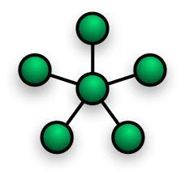
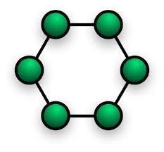
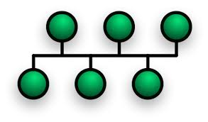
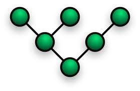
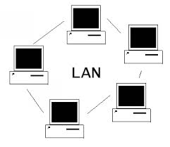
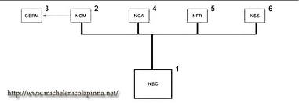
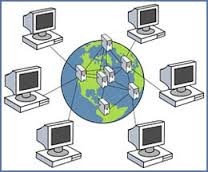
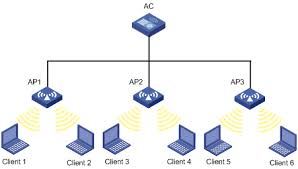

Tipologie di rete
| immagine | nome | descrizione | vantaggi e svantaggi |
|---|---|---|---|
 |
punto punto | Una rete si definsce punto quando tutti i device collegati alla rete hanno un cavo per ogni nodo della rete. ogni computer o device può parlare direttamente con tutte direttamente gli altri computer | Vantaggi:1.) In caso di un guasto su un cavo tutti gli altri computer possono parlarsi.2.) Ogni computer può parlare scon altro in un solo passo. Svantaggi:1.) Se la rete diventa grande il costo diventa enorme.2.) I cmputer che possono participare a questa rete sono speciali, cioè gestire tante schede di rete |
|  | Stella | una rete a stella è quella rete che ha al centro un nodo responsabile di far parlare tutti gli altri nodi della rete. | Vantaggi:1.) è una rete semplice2.) è adatta a tutti i normali computer. 3.) è facile aggiungere nuovi elementi alla rete Svantaggi1.) Questa rete ha un singolo punto di fallimento, (spof) se si rompe il nodo centrale nessuno piu riesce a communicare2.) Il numero di nodi della rete dipende dalla caratteristiche del nodo centrale 3.) L'uso di un app è pericoloso perchè consente a uno degli altri nodi collegati di leggere i messaggi scambiati |
|  | Anello | Una rete ad anello è quella rete in cui ogni nodo è collegato a due altri nodi normalmente questa rete ha una verso di comunicazione | Vantaggi1.) è facilmente espandibile2.) è una rete semplice svantaggi1.) se si rompe un cavo o un nodo tutta la rete è bloccata2.) per poter usare la rete bisogna aspettare il proprio turno |
|  | Bus | Una rete ad bus è quella rete in cui tutti i nodi sono collegati a una cavo speciale chiamato bus. Questo cavo consente a tutti i nodi di parlare contemporeneamente senza aspettare un turno è facile aggiungere | Vantaggi1.) è facile aggiungere nuovi nodi2.) i computer collegati sono semplici Svantaggi1.) la rottura del bus bloccaa tutta la rete il traffico causato da un nodo puo rallentare tutti gli altri |
|  | Albero | La rete ad albero è rete in cui alcuni nodi si comportano come da resposabili di un pezzo dellla rete | Vantaggi1.é una rete semlpice in cui e possibile definire dei ruoli2. I nodi si possono facilmente aggiungere con un impatto limitato al nodo padre Svantaggi1.La comunicazione tra due nodi puo richiedere molti passi2. La rottura di un nodo tutte le comunicazioni a vale |
Tipologie di rete
Suddivisione in base all'estenzione
| immagine | nome | descrizione | vantaggi e svantaggi |
|---|---|---|---|
|  | Lan | È una rete che copre una stanza ho al massimo un edificio | Vantaggi1.È una rete economica.2.È una rete semplice da realizare. Savataggi1.Per come è costruita nn può essere molto estesa.2.Normalmente è poco sicura |
|  | Can | È una rete che serve ha unire le reti di edifici separati. | Vantaggi1.Consensente di condividere facilmente risorse aziendali senza accedere ad internet 2.È norlamemente più sicuraSavataggi1.È più costosa di una lan2.È complicata da realizare e da mantenere |
 |
Man | È una rete che copre una citta o parti di essa. | Vantaggi1.Consente di condividere risorse aziendali senza accesso ha internet2.È una rete sicura Savataggi1.Ha costi molto elevati2. È molto comlpicat da gestire |
|  | Wan | È una rete che copre una citta o parti di essa. | Vantaggi1.Consente di creare una rete paralella a internetSavataggi1.Ha dei costi altissimi2.Per gestirla servono tanti esperti |
|  | Wlan | Vantaggi1.Savataggi1. |